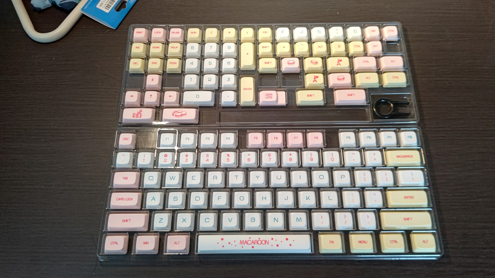
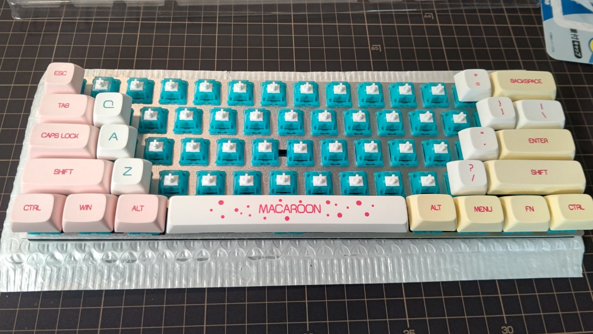
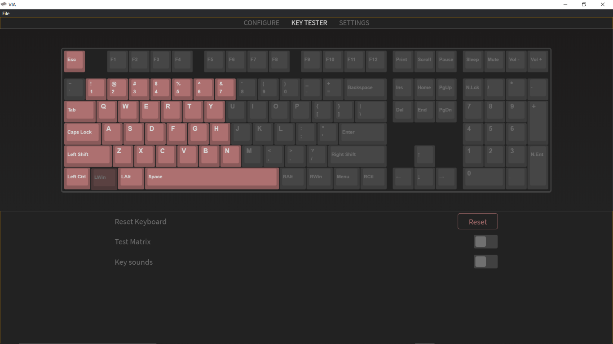
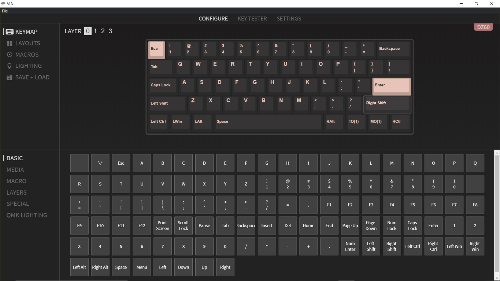

はじめに
このドキュメントは、KSS PC Club の部内において情報を共有することを目的としたものです。 誰でも自由に編集でき、必要なのは Git と Markdown 記法の知識だけですので、ぜひ、あなたもドキュメントを書いてみましょう!
（追記予定）
部活動紹介
使い方
ここでは、このドキュメントの編集方法を紹介します。 そもそもこのドキュメントは Rust で書かれた mdbook というものを使用していますので、そちらのドキュメント1を参照していただくこともできます。 一部の Markdown 記法が使用できない場合や、数式の記法が独特なため、一度目を通しておくと良いでしょう。
おしらせ(2022/7/9 追記)
Github の main ブランチに保護をかけて pullrequest を強制するか検討しています。main ブランチに直接 commit するのが怖い人は push の時にはブランチを切って pullrequest を打ってください。怖くなければ直接 commit しても ok です！
解説の前に
こちらの解説では、Git や Github に関する説明は省略します。それらの使い方を確認したい場合は、茨城県プログラミングエキスパート事業で使用しているN 予備校や、GithubSkillsなどをご覧ください。 また、必須ではありませんが、部活の Github Organisation に入ることもお勧めします。
Github からリポジトリをクローンする
まずは、Github から、このドキュメントの元データが書かれたリポジトリをクローンしましょう。リポジトリにアクセスしてください。右上の Github のマークからもアクセスすることができます。
終わったら、ローカルのクローンしたリポジトリにアクセスしてみましょう。
ディレクトリ構成
mdbook では、markdown ファイルでそれぞれの記事を作成します。srcディレクトリ以下に、ドキュメントの構成に必要なファイルを配置していて、markdown ファイルの他にも、css ファイルや画像ファイルなどを含めることができ、これらを使用して記事を書くことができます。
また、ディレクトリをきれいに管理するために、トピックごとにサブディレクトリを作成して管理をする方針をとっています。みなさんのご協力をお願いします。以下は、2022/7/29 時点の例です。
.
├── book.toml
└── src
├── SUMMARY.md
├── about.md
├── club-introduction.md
├── images
│ └── homepage-screenshot.png
├── link.md
├── magazine
│ ├── 2022
│ │ ├── contents
│ │ └── index.md
│ └── index.md
├── self-introduction
│ ├── 10th
│ ├── 11th
│ ├── 3rd
│ ├── 4th
│ ├── 5th
│ ├── 6th
│ │ └── eno1220
│ │ └── index.md
│ ├── 7th
│ ├── 8th
│ ├── 9th
│ ├── README.md
│ └── index.md
└── usage.md
記事を書く
markdown ファイルを作成して、記事を書き始めましょう。なお、以下のような記法が可能です。主なものだけ抜粋して紹介します。詳細については、こちらをご覧ください。
文字と段落
This is example.
This is new line.
以下のようになります。
This is example.
This is new line.
見出し
見出しは、#マーカーを使用し、多く使うほど小さく表示されることを意味します。
#### Big
###### Small
Big
Small
リスト
* apple
* google
* meta
1. C++
1. C
1. Python
- apple
- meta
- C++
- C
- Python
リンク
他のファイルへは相対パスでリンクを書くことができます。
たとえば [公式サイト](https://kss-pc.club).
詳しくは [こちら](link.md).
このドキュメントのURLは: <https://doc.kss-pc.club>.
たとえば 公式サイト.
詳しくは こちら.
このドキュメントの URL は: https://doc.kss-pc.club.
コードブロック
コードブロックは、以下のように```で囲んで記述します。主要な言語にはシンタックスハイライトが対応しています。
```cpp
#include "iostream"
int main(){
std::cout << "apple" << std::endl;
}
```
#include "iostream"
int main(){
std::cout << "apple" << std::endl;
}
mdbook では、Rust のコードを直接実行できます。コードブロックにマウスオーバーすると出てくる 3 つのアイコンの中で、真ん中のアイコンを押すと実行することができます。
#![allow(unused)] fn main() { println!("Hello KSS PC Club"); }
SUMMARY.md に記事を登録する
mdbook では、ただ記事を書いただけでは表示させることができません。src以下のSUMMARY.mdに記事のファイルへのリンクの記述を書く必要があります。逆に言えば、ファイルを記述しないことで、作成中の記事が web サイトからは閲覧できないようにすることも可能です。（そんなことをするタイミングがあるかと言えば...）
[はじめに](./about.md)
[部活動紹介](./club-introduction.md)
[使い方](./usage.md)
[リンク](./link.md)
- [自己紹介](./self-introduction/index.md)
- [eno1220](./self-introduction/6th/eno1220/index.md)
- [部誌](./magazine/index.md)
- [2022](./magazine/2022/index.md)
- [はじめに](./magazine/2022/contents/foreword.md)
- [この部誌を支える技術](./magazine/2022/contents/about-vivliostyle/index.md)
リンクは以上のように記述します。階層化することが可能で、自動で章の番号を振り分けてくれます。ただし、一度リスト形式で記述すると、それ以降はリスト形式での記述が許されないので注意してください。
プレビューする
プレビューをしたい場合は、mdbook をローカルにインストールする必要があります。インストールには cargo が必要ですので、インストールされていない方はまずインストールをしましょう。 mdbook のインストールは以下の通りです。
cargo install mdbook
mdbook はローカルサーバを立ててプレビューが可能です。以下のコマンドを実行すると、自動でブラウザが開きます。なお、ビルドされたファイル群はbookディレクトリ以下に展開されています。
mdbook serve --open
Github に push する
プレビューができたら、Github に push しましょう。push ができたら、Github Actions によって自動でビルド&デプロイされ、2 分程度でサイトに反映されるはずです。
おわりに
お疲れ様でした！みなさん、どんどん、記事を投稿しましょう！
リンク
KSS PC Club の運営するアカウントやサイトへのリンク一覧です。
公式 web サイト

受賞歴や各種記事の公開をおこなっています。
TypeScript と React で構成されていて、ここのページでコードを公開しています。
SNS アカウント
リンクが貼られていないものに関しては部内で直接尋ねるなどして入ってください。なお、2022 年度より Slack の利用は停止しています。 KSS PC Club では主に Github を使用して作業を行なっています。Github はソースコードを共有し、問題点を伝えたり、コードの修正を送ったりする場です。Github Organization のメンバーになりたい場合は、admin まで自分のアカウント名と共に連絡してください。
主な制作物
-
公式サイト
-
KSS Typing https://typing.kss-pc.club/
-
文化祭待ち時間モニター
-
部誌
自己紹介
メンバーの自己紹介を記述しています。
eno1220
はじめに
2022/3 年度副部長の eno1220 です。自作 OS や競プロをやっています。web も少しできます。よろしくお願いします。
スキル
- HTML
- CSS
- JavaScript
- Node.js
- React
- C
- C++
- Zig
いずれも初心者~中級者くらいです。 また、(neo)vim や Linux をほんの少しだけ触ることができます。
リンク
やりたいこと!
今年度は文化祭などのデジタル化を担当している（させられている?）ので、さまざまなところで持続可能なデジタル化を推進していきたいと思っています。 また、好きなことを全力で極めたいと考えています。
hrkn63-hnm
はじめに
こんにちは。2021年9月ごろ入部しました、はりけん++/hrkn63-hnmです。
以前は、はなむ/hnm876-mdという名前で活動していました。
スキル
- HTML
- CSS
- JavaScript
- Node.js
- React
- Next.js
- TypeScript
- Firebase
また、下記に記載されているものも少し。
- C++
- Scss
- Python
- Pug
- Docker
- DaVinchi Resolve
- Github/Git
- Webデザイン
リンク
一言
誰かを幸せにできるものづくりをモットーに生きています。
おすすめ書籍
このページは?
各部員が読んでお勧めする書籍を書き込んでいくページです。部費で購入したものも含まれているので参考にしてください。
編集する方へ ジャンルごとになるべく纏めて編集してくれると見やすいので配慮をお願いします。
苦しんで覚える C 言語
タイトルに「苦しんで」とありますが、全く苦しまずに C 言語を学べる入門書。こちらのサイトを制作している方が書かれた本で、ばっちりと基本を抑えている。 コンピュータの基本的な仕組みを理解したい人に非常にお勧めです。
アルゴリズム × 数学本
正式名称「問題解決のための「アルゴリズム × 数学」が基礎からしっかり身につく本」、通称「アルゴ数学本」「E8 本」。 AtCoder で赤コーダーの e869120 さんが執筆された本で、基礎数学や基本アルゴリズムを解説している。中学生程度の数学力があれば理解できると思われるので、ぜひ読んでみましょう！
おすすめサイト
各部員が読んでお勧めするサイトを書き込んでいくページです。
編集する方へ ジャンルごとになるべく纏めて編集してくれると見やすいので配慮をお願いします。
キュレーション系
オンラインコンパイラ
- Wandbox
- Paiza.io
- SimpleC++Editor 日本語エラー表示など、初心者向け
- COMPILER_EXPLORER コードのアセンブリを表示。眺めるだけでも面白い。
Web 全般
Web デザイン
JavaScript
TypeScript
React
C
C++
入門者向けサイト
- cpp の歩き方
- ゼロから学ぶ C++
- cpprefjp C++日本語リファレンス
- 江添亮の入門 C++
- 江添亮の詳説 C++17
- 本の虫
- ロベールのＣ＋＋教室
- Programming Place Plus
各種記事
- Google Style Guides
- Google C++ スタイルガイド 日本語全訳
- ゲーム開発者のための C++11 ～ C++20, 将来の C++ の展望
- 最近の C++ (2022 年)
- C++でクリーンなコードの書き方
競技プログラミング
コンパイラ
ブラウザ
- ちいさな Web ブラウザを作ろう レンダリングのための字句解析等を行う。seccamp2021 演習資料。
Git,Github
ネットワーク技術
- Professional IPv6 IPv6 の情報の他、基礎的なネットワーク技術の情報が豊富。
KSS PC BOOK
2022 年度より KSS PC Club が発行している部誌の紹介です。 各部員の興味のあることを好きなだけ書いています。他の学校の部誌を眺めてみるのも面白いでしょう。
| 年度 | Markdown 版 | PDF 版 |
|---|---|---|
| 2022 | Markdown |
2022 年
部活始まって以来、初めての部誌となりました。6 月に行われた文化祭に合わせて OB と現役生含め 7 名が執筆しました。
目次
| タイトル | Writer | Markdown | |
|---|---|---|---|
| はじめに | Ryoga.exe | Markdown | |
| この部誌を支える技術 | Ryoga.exe | Markdown | |
| ICPC へのお誘い | Asa | Markdown | |
| ワンクリック詐欺サイト解剖してみた | hnm876_md | Markdown | |
| ニュートン法で近似をしよう | Anthony | Markdown | |
| 基本/応用技術者試験合格体験記 | Anthony & Ryoga.exe | Markdown | |
| キーボードが欲しかったので自作してみた | Nagaso.cpp | Markdown | |
| プログラミング言語 Zig の基本文法 | eno1220 | Markdown | |
| 始めよう、ArchLinux | 香風智乃 | Markdown |
注意:Markdown 版では脚注の表示をオフにしています。脚注が見たい場合には PDF 版で閲覧してください
はじめに
このたびは本書をお手に取っていただきありがとうございます。本書は令和 4 年度けやき祭のためにパソコン部の有志によって作成された部誌です。
古河中等教育学校パソコン部 (通称：KSS PC Club) では部員それぞれが主に好きなことをし、競技プログラミングや Web 開発、ゲーム開発など様々なことに取り組んでいますが、本書では部員の興味を持っていることや語りたいことなどについて記事を自由に執筆してもらい、一冊の本に仕上げました。
新型コロナウイルスの影響により、文化祭でパソコン部が作品等を展示するのは 2019 年以来の 3 年ぶりであり、久しぶりの作品展示の機会であるのでぜひ特別棟 2 階奥のパソコン室にもお立ち寄りください。
部誌の制作については今年度からの初の試みであり、自分の言葉で物事を発信する場を設けるという意義があります。このような発信活動の場のひとつである本書を通して、読者のみなさまにも創作・技術に触れる楽しさ、好きなことに接する楽しさを感じてもらえると幸いです。
お問い合わせ先
本書に関するお問い合わせは部員まで。
免責事項
本書に記載された内容は、情報の提供のみを目的としています。したがって、本書を用いた開発、製作、運用は、必ずご自身の責任及び判断の上で行ってください。これらの情報による開発等の結果について、著者はいかなる責任も負いません。
この部誌を支える技術
はじめに
こんにちは、5 期生の Ryoga.exe です。 この部誌は今年からの初の試みということもあり折角なので (？) 今回はこの部誌を支える技術についてお話しようかと思います。この部誌については GitHub 上で管理されているため、そのリポジトリも合わせてご覧ください。1
Vivliostyle について
本書は HTML & CSS で組版ができる Vivliostyle2 の Create Book3というものを使って書かれています。
Vivliostyle は CSS 組版という Web 標準技術をベースにした、自動組版システムのオープンソースプロジェクトです。
CSS 組版は HTML と CSS をベースにしているので、普段から HTML/CSS を扱っている人にとっては Vivliostyle のプロダクトが比較的手軽に感じるでしょう。
Vivliostyle を選択した理由
まず、複数人で書くことが前提となっていたので原稿等を共有する必要があります。また、見た目などもある程度統一させたいです。そのため、Word 等のソフトウェアは真っ先に候補から外れました。
そして、本を書く上で新たに多くの記法などを覚えるのは大変かつ、脳のリソースの無駄になります。そこで、 Markdown で書けて、スタイルをコードで整えることができ、GitHub 上で管理できるといったことが必要でした。
そのため、Vivliostyle を選択しました。(日本語のドキュメントが充実しているという理由もありました。)
VFM について
Create Book がサポートする Markdown 方言は、Vivliostyle Flavored Markdown (VFM) です。 詳細は公式ドキュメント4を参照してください。
今回はこの VFM でサポートされている記法について、ざっくりとご紹介します。
---
title: セロ弾きのゴーシュ
---
# セロ弾きのゴーシュ
**宮沢賢治**[^1]
ゴーシュは町の活動写真館でセロを弾く係りでした。
けれどもあんまり上手でないという評判でした。
上手でないどころではなく実は仲間の楽手のなかではいちばん下手でしたから、
いつでも楽長にいじめられるのでした。
ひるすぎみんなは楽屋に円くならんで今度の町の音楽会へ出す
第六{交響曲|こうきょうきょく}の練習をしていました。
{width=300}
[^1]: https://ja.wikipedia.org/wiki/%E5%AE%AE%E6%B2%A2%E8%B3%A2%E6%B2%BB
基本的には GitHub でサポートされている Markdown の方言である GFM (GitHub Flavored Markdown) の記法は使えます。 しかし、上のサンプルにはなにか見慣れない記法がありますね。それぞれ説明します。
ルビ
{親文字|ヨミ} とすることでルビが振れます。便利。悔やむと書いてミライと読ませることもできますね！
脚注 (後注)
文章内に [^n] を置きその文の後の箇所で [^n]: hoge とすると脚注をつけることができます。
ちなみに、@vivliostyle/theme-techbook のテーマパッケージを使用している場合は <span class="footnote">hoge</span> とすると本文 (ページ) の下に注記をつけることができます。
余談ですが、脚注をつける記法は実は GFM で同様にサポートされていたりします。
Sass を使う
この節では Sass と一緒にビルド/プレビューする方法をご紹介します。CSS を使ってスタイルを当てるのですが CSS よりも Sass の方がいろいろと楽だったりします。
Create Book でプレビューするとき、直接 .scss ファイルを読み込めないため、スタイルを調整しながらプレビューするといったことが困難です。
これを解決するために、npm-run-all を使います。run-p というコマンドがあり、パラレル実行ができるためこれを活用します。
npm や yarn でインストールして
$ yarn add --dev npm-run-all
package.json の script に以下を追加します。
"start": "run-p preview watch:scss",
"preview": "vivliostyle preview",
"watch:scss": "sass --watch scss:css"
これで yarn start とすると SCSS のビルドとプレビューが同時にできます。便利。
GitHub Actions でビルドする
この部誌は GitHub 上で管理されており、各部員がブランチを切り、PR を出す...といった感じで書かれています。
しかし、現状どのような見た目になっているかを確認できない部員もいたりします。そのため、GitHub Actions を活用してビルドし、自動で publish ブランチに push されるような仕組みにすることにしました。
以下のワークフローを作成するとできます。
name: Build
on:
workflow_dispatch:
jobs:
build:
name: Build
runs-on: ubuntu-latest
env:
TZ: Asia/Tokyo
GITHUB_TOKEN: ${{ secrets.GITHUB_TOKEN }}
steps:
- name: Checkout
uses: actions/checkout@v2.3.4
with:
ref: main
- name: Setup Node
uses: actions/setup-node@v2.1.5
with:
node-version: '14.16.0'
- name: Get yarn cache directory path
id: yarn-cache-dir-path
run: echo "::set-output name=dir::$(yarn cache dir)"
- name: Cache deps
uses: actions/cache@v2.1.6
with:
path: ${{ steps.yarn-cache-dir-path.outputs.dir }}
key: ${{ runner.os }}-yarn-${{ hashFiles('yarn.lock') }}
restore-keys: |
${{ runner.os }}-yarn-
- name: Install deps
run: yarn install --frozen-lockfile
- name: Install ghostscript
run: |
sudo apt-get -yqq install libgbm1 ghostscript
sudo apt install poppler-utils poppler-data
- name: Build
run: yarn build
- name: Build Press-Ready
run: yarn press-ready
- name: Deploy
uses: s0/git-publish-subdir-action@develop
env:
REPO: self
BRANCH: publish
FOLDER: public
GITHUB_TOKEN: ${{ secrets.GITHUB_TOKEN }}
workflow_dispatch ではなく main ブランチ等への push をトリガーにしたほうが楽かもしれないですね。
この部誌をビルドする
前述したとおりこの部誌は GitHub のリポジトリで管理されているのでそれを clone してきましょう。
$ git clone git@github.com:kss-pc-club/book-2022.git
依存関係をインストールし、yarn build とするとビルドができます。
$ yarn install
$ yarn build
public/book.pdf が作られます。
入稿用のデータを yarn press-ready というコマンドで作ることができますが、ghostscript と poppler-utils のインストールが必要なので注意してください。
おわりに
ある程度しっかりとした本を既に知っている技術で作れました。
CSS 組版で本を作りたい！Markdown で本を書きたい！...そんな方はぜひ Vivliostyle で始めてみませんか？
ICPC へのお誘い
はじめに
こんにちは、第 3 期生の土屋です。 ネットでは「Asa (@a01sa01to)」として活動しています1。 2021 年 3 月に古河中等教育学校を卒業し、現在は埼玉大学工学部情報工学科に所属しています。 この度、細島部長にお声がけいただき、このような形で部誌の編集に携わることとなりました。
技術系（特にプログラミング関連）の記事がほとんどである、この部誌を読んでくださっている方の中には、「競技プログラミングについて聞いたことがある / すでに参加している」という方がいると思います。そこで、国際大学対抗プログラミングコンテスト（ICPC）に関する記事を書きたいと思います。
ここまでの情報で私のフルネームと誕生日がわかるらしいですよ
ICPC ってなに？
国際大学対抗プログラミングコンテスト（International Collegiate Programming Contest・通称 ICPC）2 は、同じ大学の 3 人で 1 チームを作り、プログラミングの問題を解く大会です。中学生・高校生の皆さんは、「国際情報オリンピックのチーム参加版」と捉えていただけるとわかりやすいかもしれません。
この大会には世界各国から毎年 3 万人以上が参加しており、日本からも様々な大学から参加しています。2021 年度、私の所属する埼玉大学からも 2 チーム出場し、私もそのうちの 1 チームに参加していましたちなみに私のチームの結果は、予選 43 位、アジア地区大会 11 位でした。もう 1 チームは予選 104 位で、アジア地区大会に進出できませんでした。。
大会の流れとしては、「国内予選 → アジア地区大会 → 世界大会」といった流れです。情オリに似ていますね。国内予選では 3 時間で 6-7 問、アジア地区大会では 5 時間で 10 問程度の問題を解きます。情オリとは違い、得点ではなく、解いた問題数で競います。また、アジア地区大会で利用できるコンピュータもチームで 1 台と制限があります。3そのため、1 人が解いている間にほかの人がアイデアを出すなどといったチームワークが重要になります。 さらに知りたい方は、ICPC 日本公式団体に掲載されている「3 分でわかる ICPC」（ https://icpc.iisf.or.jp/acm-icpc/3min/ ）も併せてご覧ください。
32020 年度・2021 年度はオンラインだったため、1 人 1 台でした。なお国内予選では、コードではなく、自分のコンピュータで出た答えを提出します。時間制限は実質無限です。
 {width=400}
{width=400}
どんな問題を解くの？
「○○ くらいの難易度です！」と言っても個人差があると思うので、実際に出された問題を見てみましょう。
2021 年度 国内予選 A 問題
https://icpc.iisf.or.jp/past-icpc/domestic2021/contest/all_ja.html#section_Aより、問題文の概要を書いてみます。
4 つのお椀とその中に入ったビー玉がある。 1 つもビー玉が入っていないお椀があることがあるが、少なくともどれか 1 つのお椀にはビー玉が入っていることが保証されている。
4 つのお椀に対して、空でないお椀が 1 つだけになるまで、以下の操作を繰り返す。
- 空でないお椀のうち、ビー玉が少ないものを選ぶ。2 つ以上あるときは、一番左のお椀を選ぶ。
- 選んだお椀以外の、空でないすべてのお椀から、選んだお椀と同じ数のビー玉を取り除く。ただし、選んだお椀のビー玉はそのままにしておく。
さて、最終的にお椀に残ったビー玉の個数はいくつ？
制約
- それぞれのビー玉の個数は、0 個以上 100 個以下。
- 少なくとも 1 つは 0 ではない。
- データセットは 100 個以内。
0 0 0 0は終了の合図。
サンプルの入出力を見てみましょう。
10 8 4 6
0 21 7 35
5 45 13 3
52 13 91 78
0 0 0 0 （←入力終了の合図）
2
7
1
13
さて、この問題をあなたならどう解きますか？
まず思いつくのは、単純にシミュレーションしてみることです。
具体的には、ビー玉の残ったお椀が 1 以下ではない限り、次の手順を繰り返します。
- お椀を、ビー玉の個数でソートする
- 一番少ないお椀を選び、そのビー玉の個数を他から減らす
- ビー玉が 0 以下になったお椀を削除する
このような方法でも、計算量は高々 \(O(T \sum a_i)\) （\(10^4\) くらい）なので、高速です4 なお、データセット数を \(T\) としています。
4各手順で少なくとも 1 つは取り除かれるので、最大でビー玉の個数分の手順しか行われません
#include <bits/stdc++.h>
using namespace std;
int main() {
while (true) {
vector<int> a(4);
for (int i = 0; i < 4; ++i) cin >> a[i];
if (a[0] + a[1] + a[2] + a[3] == 0) break;
while (a.size() > 1) {
sort(a.begin(), a.end());
for (int i = 1; i < a.size(); ++i) a[i] -= a[0];
auto itr = remove_if(a.begin(), a.end(), [](int x) {
return x <= 0;
});
a.erase(itr, a.end());
}
cout << a[0] << endl;
}
return 0;
}
ICPC では、このような単純な繰り返し処理や条件分岐などができれば、チームに貢献できます。 実際、当時 AtCoder 茶色 の私でも、解くことができました。
参考までに、さらに高速な方法をご紹介します。それは、最大公約数を用いる方法です。
実は、それぞれのデータセットの答えは、 \(a_1, ... , a_4\) の最大公約数になることが証明できます5
これを用いると、 \(O(T \log(\min a_i))\) で計算できます。
#include <bits/stdc++.h>
using namespace std;
int main() {
while (true) {
int a, b, c, d;
cin >> a >> b >> c >> d;
if (a + b + c + d == 0) break;
int g = a;
g = gcd(g, b); g = gcd(g, c); g = gcd(g, d);
cout << g << endl;
}
return 0;
}
2020 年度 アジア地区大会 A 問題
本当は 2021 年度の問題を載せようと思ったのですが、まだ公開されていませんでした...。（何かの体積を計算させる問題だったと記憶しています）
そこで、2020 年度の問題を載せます！6
https://icpc.iisf.or.jp/past-icpc/regional2020/problems-2020.pdf すべて英語です。本番では、機械翻訳は許されません（辞書は OK）
\(N \times N \times N\) の立方体に収まるある立体を、 \(x-y\), \(y-z\), \(z-x\) 平面それぞれに射影した図が与えられます。 与えられた図に適する図形が存在するか判定してください。
制約: \(1 \le N \le 100\)
解法は、 \(N \times N \times N\) すべてが埋まった立方体から、「削って」いき、最終的に出来上がった立体が、条件が満たしているかを確認する方法です。
アジア地区大会では、自分のコンピュータではなく、ジャッジ用コンピュータで正誤判定されるため、時間制限が定められています。 この問題では 2 秒ですが、以上の解法は \(O(N^3)\) なので、AC になります。
実装は大変ですが、これも問題なく解けると思います。
#include <bits/stdc++.h>
using namespace std;
#define rep(i, n) for (int i = 0; i < (n); ++i)
int main() {
int n;
cin >> n;
vector yz(n, vector<bool>(n)), zx(n, vector<bool>(n)), xy(n, vector<bool>(n));
rep(i, n) {
string s; cin >> s;
rep(j, n) yz[j][n - i - 1] = (s[j] == '1');
}
rep(i, n) {
string s; cin >> s;
rep(j, n) zx[j][n - i - 1] = (s[j] == '1');
}
rep(i, n) {
string s; cin >> s;
rep(j, n) xy[j][n - i - 1] = (s[j] == '1');
}
vector ans(n, vector(n, vector<bool>(n, true)));
rep(i, n) rep(j, n) if (!yz[i][j]) rep(k, n) ans[k][i][j] = false;
rep(i, n) rep(j, n) if (!zx[i][j]) rep(k, n) ans[j][k][i] = false;
rep(i, n) rep(j, n) if (!xy[i][j]) rep(k, n) ans[i][j][k] = false;
rep(i, n) rep(j, n) {
if (yz[i][j]) {
bool chk = false;
rep(k, n) if (ans[k][i][j]) chk = true;
if (!chk) { puts("No"); return 0; }
}
}
rep(i, n) rep(j, n) {
if (zx[i][j]) {
bool chk = false;
rep(k, n) if (ans[j][k][i]) chk = true;
if (!chk) { puts("No"); return 0; }
}
}
rep(i, n) rep(j, n) {
if (xy[i][j]) {
bool chk = false;
rep(k, n) if (ans[i][j][k]) chk = true;
if (!chk) { puts("No"); return 0; }
}
}
puts("Yes");
return 0;
}
最後に
ICPC の問題を実際に見てみましたが、「こんなの解けるわけがない！」というものではなかったと思います。 むしろ、少し考えたうえで、プログラミングの初歩である「繰り返し処理」「条件分岐」を使いこなすだけで、最初の問題は解けます。
競技プログラミングをするうえで、ICPC は一生に 5 回程度しか参加できないため、貴重な体験になることは間違いないです。 そして ICPC は、プログラミング力ではなく、チームワークが鍵です。 チーム戦で生まれる連帯感というのは、なかなか体験できないと思います。
この記事を通じて、少しでも興味を持っていただけたのであれば幸いです。 大学に入学した際には、ぜひとも ICPC に参加してみてください！！！！
参加資格のない方は...順位表実況や過去問などでも楽しめます！
最後までお読みいただき、ありがとうございました！
ワンクリック詐欺サイト解剖してみた
はじめに
こんにちは。古河中等教育学校６期生の張替健太です。 僕の記事の前に書かれた小難しそうな記事を見て、「プログラミング難しそうだな」とか「変態の領域なのかな」感じている人がいるかもしれません。 実際そうですが、Web プログラミングは意外と簡単です。 どれほど簡単なのか Web プログラミングの基本が詰まった教科書「ワンクリック詐欺サイト」を 見ながら体感していただければ幸いです。
ワンクリック詐欺サイトってなあに
その名の通り、一見ありふれたボタンをクリックした途端に「会員登録完了」や「〇〇日までに料金を払ってね」などの脅しがたくさん出力される Web サイトのことです。 2018 年時点では存在していましたが、今でもあるんでしょうか。 もし引っかかっても、僕のように電話はかけずに無視してブラウザバックしましょう。
ワンクリック詐欺サイト解剖
支払い期限タイマーの表示

こんな感じでクリックした人を焦らせて個人情報入力させようという魂胆です。 冷静に見てみるとおもちゃのような仕組みです。
<div>
<p><span id="hour"></span>hours</p>
<p><span id="min"></span>minutes</p>
<p><span id="sec"></span>seconds</p>
</div>
const hour = document.getElementById("hour");
const min = document.getElementById("min");
const sec = document.getElementById("sec");
function countdown(){
const now = new Date(); //現在時刻を取得
const tomorrow = new Date(now.getFullYear(),now.getMonth(),now.getDate()+1); //明日の0:00を取得
const diff = tomorrow.getTime() - now.getTime(); //時間の差を取得（ミリ秒）
//ミリ秒から単位を修正
const calcHour = Math.floor(diff / 1000 / 60 / 60);
const calcMin = Math.floor(diff / 1000 / 60) % 60;
const calcSec = Math.floor(diff / 1000) % 60;
//取得した時間を表示（2桁表示）
hour.innerHTML = calcHour < 10 ? '0' + calcHour : calcHour;
min.innerHTML = calcMin < 10 ? '0' + calcMin : calcMin;
sec.innerHTML = calcSec < 10 ? '0' + calcSec : calcSec;
}
countdown();
setInterval(countdown,1000);
- HTML で書かれたファイルの hour,min,sec を JavaScript という言語で取得する
- 現在の時刻と明日の 0 時を取得して差分を出して取得する
- mod の考え方を利用して時間、分、秒を算出する
- 見やすく二桁表示にして、カウントダウンする
大体こんな手順です。あんまり怖くないですね。
機密(？)情報の表示
情報が既に抜き取られていて逃げられない…なんてことはありません。 端末情報やブラウザのバージョンなんかは開示されているので、 誰でも簡単に抜き取ることができます。
<script src="platform.js"></script>
<script>
document.write(platform.name); //Firefox
document.write(platform.version); //69.0
document.write(platform.os.toString()); //OS X 10.14
document.write(platform.layout); //Gecko
</script>
上部のように書くと、こんな感じに抜き取ることができます。

// on IE10 x86 platform preview running in IE7 compatibility mode on Windows 7 64 bit edition
platform.name; // 'IE'
platform.version; // '10.0'
platform.layout; // 'Trident'
platform.os; // 'Windows Server 2008 R2 / 7 x64'
platform.description; // 'IE 10.0 x86 (platform preview; running in IE 7 mode) on Windows Server 2008 R2 / 7 x64'
// or on an iPad
platform.name; // 'Safari'
platform.version; // '5.1'
platform.product; // 'iPad'
platform.manufacturer; // 'Apple'
platform.layout; // 'WebKit'
platform.os; // 'iOS 5.0'
platform.description; // 'Safari 5.1 on Apple iPad (iOS 5.0)'
// or parsing a given UA string
var info = platform.parse(
"Mozilla/5.0 (Macintosh; Intel Mac OS X 10.7.2; en; rv:2.0) Gecko/20100101 Firefox/4.0 Opera 11.52"
);
info.name; // 'Opera'
info.version; // '11.52'
info.layout; // 'Presto'
info.os; // 'Mac OS X 10.7.2'
info.description; // 'Opera 11.52 (identifying as Firefox 4.0) on Mac OS X 10.7.2'
上部は抜き取れる情報と抜き取り方みたいなことが書かれています。 重要なのはこの内容ではなく、いろんな情報が誰でも抜き取れるんだなあということです。 このようなライブラリ（ https://github.com/bestiejs/platform.js ）という誰でも使えるものがあるのでハッキングとかではないんだなと思っておくと気が楽です。
写真を撮ったかのような演出
謎のシャッター音と点滅で「もしかして写真を撮られたのかも」と 思うかもしれませんがそんなことありません。演出です。

今では Web ポリシー改定によってシャッター音を急に鳴らすことはかなり難しくなっています。 できないことはありませんが、実装するための SPA(シングルページアプリケーション)開発者・経験者が少ないらしいので、 こちらの解剖はせず、点滅の方の解剖をしていこうと思います。
<div class="camera">
<img src="https://media.discordapp.net/attachments/757627473427955867/972334826436829184/7.png">
</div>
<style>
.camera{
animation: flash 0.3s linear 1s;
width:256px;
height:auto;
display: block;
margin-left: auto;
margin-right: auto;
}
@keyframes flash {
0%,100% {
opacity: 1;
}
50% {
opacity: 0;
}
}
</style>
カメラのイラストが点滅して少し怖くなると言ったハッタリですね。 これは CSS アニメーションというものを使っています。 カメラの画像の透過率を 100%→0%→100%と変化させて、flash というアニメーションを作っています。 後は上手に点滅しているように見せるために 1.0 秒後に 0.3 秒間等しい速度で flash を使えとカメラのイラストに指定すれば完成です。
おわりに
いかがでしたか、よければ今後の糧にでもしていただけると幸いです。 近年、情報分野の発達は目覚ましいので、こんなものよりもより高度な技術でみなさんを騙す人が出てくることは必至でしょう。 そのためにもぜひ自ら情報の力をつけてみてはいかがでしょうか。
参考・参照
- https://www.webdlab.com/jquery/jquery-new-date/
- https://tcd-theme.com/2021/08/javascript-countdowntimer.html
- https://qiita.com/TD12734/items/671064e8fce75faea98d
- https://teratail.com/questions/265276
- http://kentaro-shimizu.com/lecture/fraud/pay.html
- https://coco-factory.jp/ugokuweb/
- https://deadlinetimer.com/
ニュートン法で近似をしよう
はじめに
世の中には、特別な記号を使わずして表すことのできない、多くの数が存在しています。 具体的に言うと、$\sqrt{2}$、$\log{2}$、$\pi$(円周率)、$e$(ネイピア数)などの無理数と呼ばれる数がそれにあたります。
そして、我々人間はその値がどの程度であるか確かめるために様々な方法でその値を近似してきました。具体的には、円周率を正多角形を用いて求めてみたり、不等式で値を概算してみたり、級数を用いたりなどです。
今回はそんな人間が生み出してきた近似方法の一つである、ニュートン法について焦点を当てて考えていこうと思います。
ニュートン法とは
まず、ニュートン法の説明をします。ニュートン法とは、簡単に言うと接線を引きその交点を求めることによって、求めたい値を近似していく方法です。この時、接線の傾きを求める関係上、$f(x)$ は微分可能な関数でなくてはいけません。
厳密に言うと $f(x) = 0$ の解 (求めたい数) を接線を用いることによって近似します。ここで、$f(x)$ の接線を求めるために、求めたい数より大きな $x$ 座標全てで微分可能であることを前提とします。 最初の $x$ 座標を $x_1$ とし、最初の $y$ 座標を $f(x_1)$ とします。
一回目の操作の時、接線の傾きは $f'(x_1)$ で、これは点 $(x_1,f(x_1))$ を通るから接線の方程式は
$$ y = f'(x_1)(x - x_1) + f(x_1) $$
となる。
 {width=300}
{width=300}
これを繰り返すことにより、$n$ 回目の接線の傾きは $f'(x_n)$、接点は点 $(x_n,f(x_n))$ であるから $n$ 回目の接線の方程式は
$$ y = f'(x_n) ( x - x_n ) + f(x_n) $$
となる。
この時、$y = 0$ の時の $x$ 座標が $x_{n+1}$ となるので、$y = 0, x = x_{n+1}$ として移項すると
$$ x_{n+1} = x_n - \frac{f(x_n)}{f'(x_n)} $$
という式が得られる。
この式の $n$ を限りなく大きくすることによって得られる $x$ が答えとなります。
 {width=300}
{width=300}
図からなんとなく収束していきそうな感じがしますが、証明によりきちんと値が収束することを示します。
証明を以下の 3 ステップで行います。
- $\sqrt{a} < x_{n+1} < x_n$ を示す
$x_1 > \sqrt{a} > 0$（前提より）
数学的帰納法により $x_n > \sqrt{a}$を示す
(1) $n = 1$のとき $x_1 > \sqrt{a}$
(2) $n = k$のとき成り立つとすると $x_k > \sqrt{a}$
$n = k+1$ のとき
$$ x_{k+1} = \frac{x_k^2 + a}{2x_k} > \frac{(a+a)}{2\sqrt{a}} = \sqrt{a} > 0 $$
よって $n = k$ が成り立つとき、$n = k+1$ も成り立つ
(1)(2) より全ての自然数 k において $x_n > \sqrt{a}$ が成り立つ
ここで
$$ x_n - x_{n+1} = x_n - (\frac{x_n}{2} + \frac{a}{2x_n}) = \frac{x_n^2 - a}{2x_n} $$
$x_n > \sqrt{a}$ より、$x_n^2 - a > 0$
故に
$$ \frac{x_n^2 - a}{2x_n} > 0 $$
したがって $x_{n+1} < x_n$
よって
$$ \sqrt{a} < x_{n+1} < x_n $$
- $x_{n+1}-\sqrt{a} < \frac{1}{2}(x_n-\sqrt{a})$ を示す
$$ \begin{eqnarray} \frac{1}{2}(x_n-\sqrt{a}) - x_{n+1} + \sqrt{a} &=& \frac{\sqrt{a}}{2} - \frac{a}{2x_n}\ &=& \frac{\sqrt{a}}{2x_n}(x_n-\sqrt{a}) \end{eqnarray} $$
$x_n > \sqrt{a}$ より $\frac{\sqrt{a}}{2x_n}(x_n-\sqrt{a}) > 0$
したがって
$$ x_{n+1}-\sqrt{a} <\frac{1}{2}(x_n-a) $$
- 極限値が $\sqrt{a}$ に収束することを示す
2.で求めた不等式を繰り返すことにより
$$ \begin{eqnarray} x_n-\sqrt{a} &<& \frac{1}{2}(x_{n-1}-\sqrt{a})\ &<& (\frac{1}{2})^2(x_{n-2}-\sqrt{a})\ &<& \cdots < (\frac{1}{2})^{n-1}(x_1-\sqrt{a}) \end{eqnarray} $$
$x_1 > \sqrt{a}$ より
$$ 0 < x_n- \sqrt{a} < (\frac{1}{2})^{n-1}(x_1-\sqrt{a}) $$
ここで
$$ \lim_{n \to \infty} (\frac{1}{2})^{n-1}(x_1-\sqrt{a}) = 0 $$
はさみうちの原理により
$$ \lim_{n \to \infty} (x_n - \sqrt{a}) = 0 $$
したがって
$$ \lim_{n \to \infty}x_n = \sqrt{a} \quad \blacksquare $$
プログラミングしてみよう！！
では、先ほどこの方法が成り立つことが確認できたのでプログラムによって再現していきましょう。今回は $\sqrt{2}$ の場合について作っていくことにします。
以下のプログラムは、すべてC++で記述されています。
さっそくですが、下のようなコードになります。
// コード(cpp)
#include <bits/stdc++.h> // おまじない
using namespace std;
// プログラムのはじまり
int main() {
double ans = 20;
// 十分な回数(10000回)繰り返す
for (int i = 0;i < 10000; i++) {
// ニュートン法の式の通りに値を更新
ans = ans -((ans*ans)-2)/(2*ans);
}
// 小数第15位までansの数字を表示する
printf("%.15f\n",ans);
} // プログラムの終わり
これだけを見てもよく分からないと思うので補足をしてきます。
① プログラムの基本構造(C++)
プログラミング言語には日本語や英語と同じように文法が存在しており、一定の規則の上で書かなくてはいけません。下の部分はプログラムの開始、終了をコンピューターに伝える部分となっています。
#include <bits/stdc++.h>
using namespace std;
int main() {
}
② 変数の宣言
今回扱う数字は実数なので、実数の変数を定義し、初期値(= x1)としておきます。
double ans = 20;
これは $x_1＝20$ としています。また、この初期値は求めたい数より大きければどの数でもかまいません。（自然数に限らず、実数でも OK です。）
③ 繰り返し
{}で囲まれている部分を 10000 回繰り返します。
for (int i = 0;i < 10000; i++) {
}
ちなみに下の場合は 10 回の繰り返しとなります。
for (int i = 0;i < 10; i++) {
}
④ ニュートン法の計算部分
初めに、ほとんどのプログラミング言語における「=」は等式を意味しているものではなく、代入を意味します。例えば a = 20 を例にとって考えてみます。数学では a と20は同じ値であるということを意味していますが、プログラミング言語では「変数aに20を代入する」ということを意味します。
また、掛け算の記号は × でなく * を、割り算の記号は ÷ でなく / を用います。
このプログラムでは、ansの値を更新していき、値を求めます。
⑤ 表示
10000 回計算が終わった後、ans の値を小数第 15 位まで表示して改行します。
printf("%.15f\n",ans);
結果
前節で書いたプログラムの初期値を変えることによって値がきちんと求めることができるかと、収束のスピードを見ていきたいと思います。
また、収束したとは正確な値との差が非常に小さくなった時とします。 しかし、その差の基準はいったいどうすれば良いでしょうか？
まず、$x_k$ は常に求めたい数より大きくなる、また $n$ が増加するにつれて $x_k$ は小さくなって求めたい数に近づく、という二つの事象から次の $x_{k+1}$ との差が非常に小さいとき、ほとんど近似できた、すなわち、 $( x_k - x_{k+1} ) < \epsilon$ （$k$:自然数、$\epsilon$:計算精度を決める非常に小さな定数）を満たしたら近似できたということにしましょう。
ここで、1 回の計算にかかる時間はほぼ同じと言えるので、上記の条件式を満たすようになるまでに計算した回数が小さいほど収束が早いといえます。
近似できたのが何回目の操作であるかも表示するプログラムの一例を以下に示します。
// コード(cpp)
#include <bits/stdc++.h> // おまじない
using namespace std;
// プログラムのはじまり
int main() {
double ans = 20; // x1の値
int i;
// 十分な回数(10000回)繰り返す
for(i = 0; i < 10000; i++){
double tmp = ans;
// ニュートン法の式の通りに値を更新
ans = ans -((ans*ans) - 2)/(2*ans);
// 差が0.0000001になったら計算終了
if(tmp - ans <= 0.0000001) break;
}
// ansの値と誤差が小さくなった時のiを表示
printf("%.15f\n%d\n",ans,i);
} // プログラムの終わり
このプログラムを用いることで、計算にかかった回数 = 速度が分かります。
| x₁ の値 | 計算した回数 |
|---|---|
| 2 | 4 |
| 20 | 7 |
| 200 | 11 |
| 2000 | 14 |
| 20000 | 17 |
| 200000 | 21 |
初期値が求める値に近いほど収束するスピードが早いことが分かります。まあ、当たり前と言えばあたりまえなのですが。
例えば、ある初期値 $x_1$ によって得られる $x_2$ が別の初期値 $x'_1$ と同じになった時、単純に計算にかかる時間は 1 回分短くなります。
応用方法
実は、このニュートン法は $\sqrt{2}$ の時だけでなく、$\sqrt{n}$ ( $n$ は任意の正の実数)のときにも成り立ちます。
さらにいうと、これは 2 乗根の時だけではなく 1.5 乗根、3 乗根、4 乗根、...$m$ 乗根( $m$ は任意の正の実数)の時にもすべて成り立ちます。
これは、最初に求めた式 $x_{n+1} = x_n - f( x_n) / f'( x_{n+1})$ をもとに、2 次式が成り立つことが分かります。
この式の $f(x)$ の次数を変えても、(例えば $f(x) = x^3 - 2$ のときでも)成り立ちます。
{width=250}
したがって、$\sqrt[k]{m}$ ( $k,m$ はともに任意の正の実数)の値も同様の方法で近似することができます。ニュートン法の式 $x_{n+1} = x_n - f( x_n) / f'( x_n)$ を用いることは変わらないので $\sqrt[k]{c}$ を求める場合、$f(x) = x^k - c$ とおいて、少し変えると作ることが出来ます。
また、前節では調べる数字を $\sqrt{2}$ のみに絞って考えているため変数が少なかったのですが、ここで「何乗根であるか？」と「根の中の数字」を表す変数を追加し、新たにコードを書き直します。
コードは以下の通りになります。
// コード(cpp)
#include <bits/stdc++.h> // おまじない
using namespace std;
// プログラムのはじまり
int main() {
double ans = 20; // 初期値
double k = 3; // 何乗根か？
double c = 2; // 根の中の数字は何か？
// 十分な回数(10000回)繰り返す
for (int i = 0;i < 10000; i++){
// ニュートン法の式の通りに値を更新
ans = ans -(pow(ans,k)-c)/(k*pow(ans,k-1));
}
// 小数第15位までansの数字を表示する
printf("%.15f\n",ans);
} // プログラムの終わり
この時、$f'(x) = kx^{k-1}$ であるから、累乗をプログラムで表現する必要が出てきます。
そこで、$a^b$ を pow(a,b) という標準の関数で計算します。
次節では収束条件とその証明を書きます。
収束条件とその証明
収束条件： $f(x_0) > 0、f(a) < 0、f'(x) > 0、f''(x) > 0$ の全てを満たす。
すなわち、$x$ についての閉区間 $[a,x_0]$ において $f(x)$ が下に凸な単調増加なグラフであり、$f(x) = 0$ を満たす解が一つある状態です。
証明
$x$ が区間 $[a,x_0]$ にある時、$f''(x) > 0$ より $$\int_{x}^{x_0}f''(x)dx > 0$$ が成り立つ。
計算し、式を変形すると $f'(x) < f'(x_0)$ したがって $$\int_{x}^{x_0}f'(x)dx < \int_{x}^{x_0}f'(x_0)dx $$ が成り立つ。
計算すると $$f(x_0) - f(x) < f'(x_0)(x_0-x)$$
ここで $f(a) < 0 < f(x_0)$ が成り立つから中間値の定理より $f(\alpha) = 0$ を満たす $\alpha$ が区間 $(a,x_0)$ に存在する。
また、関数 $f(x)$ は単調増加関数であるから、逆関数が存在する。 （区間 $[a、x_0]$ において $f(k) = f(l)$ でかつ $k\neq l$ を満たす数が存在しないものを逆関数という。）
よって $f^{-1}(x)$ を $f(x)$ の逆関数とすると $\alpha = f^{-1}(0)$ と表せる。
ここで $x = \alpha$ とおくと $$f(x_0)-f(\alpha) < f'(x_0)(x_0-\alpha)$$
ここで $f(\alpha) = 0, f'(x) > 0, f(x_0) > 0$より $$\alpha < x_0 - \frac{f(x_0)}{f'(x_0)} < x_0$$
また、$x_0 - f(x_0)/f'(x_0) = x_1$ より $$\alpha < x_1 < x_0$$
これを繰り返すことによって $\alpha < \cdots < x3 < x2 < x1$
また、$x$ は単調減少であり下限があるため数列 ${x_n}$ は収束する。ここで数列 ${x_n}$ が $\beta$ に収束するとする。
$x_{n+1} = x_n - f(x_n) / f'(x_n)$ より
$$\lim_{n \to \infty} x_{n+1} = \lim_{n \to \infty}(x_n - \frac{f( x_n)}{f'( x_n)})$$
ここで $\lim_{n \to \infty}x_n = \beta, \lim_{n \to \infty}x_{n+1} = \beta$ であるから $$\beta = \beta - \frac{f(\beta)}{f'(\beta)}$$
これより $f(\beta) = 0$
関数 $f(x)$ は逆関数を持つため $\beta = f^{-1}(0)$ よって $$\beta = \alpha \quad (\because \alpha = f^{-1}(0))$$
したがって、数列 ${x_n}$ は $\alpha$ に収束し、$f(\alpha) = 0$ となるので
ニュートン法の数列 ${x_n}$ は「 $f(x_0) > 0, f(a) < 0, f'(x) > 0, f''(x) > 0$ の全てを満たす」とき $f(x) = 0$ の解 $\alpha \quad (a < \alpha < x_0)$ に収束する。$\quad \blacksquare$
おわりに
プログラミングと聞くと、難しくて初心者にはできないものだと考えてしまうかもしれませんが、この記事のように簡単な計算や、文字を表示させるなど、単純な動作だけなら今すぐにでも実装・実行できます。
それに、今の時代コンパイラはオンライン上のものを使うこともでき、インターネットで検索すれば実装方法も簡単に見つけることができますし、自分でアレンジすることができます。
ぜひ、皆さんも簡単なプログラムから初めて、自分の作りたいものを作りましょう！
参考文献等
- ニュートン法 wikipedia
https://ja.wikipedia.org/wiki/ニュートン法 - ニュートン法とは？ ～定義と性質～ - 理数アラカルト
https://risalc.info/src/newtons-method-properties.html - グラフ作成 Geogebra
https://www.geogebra.org/calculator - 今回使用したオンラインコンパイラ : paiza.io
https://paiza.io/ja
基本/応用情報技術者試験合格体験記
こんにちは。令和 3 年度秋期応用情報技術者試験に合格した第 5 期生の Ryoga.exe と同じく 5 期生の令和 3 年度下期基本情報技術者試験に合格した Anthony です。今回はこの試験に向けた勉強方法や試験会場の様子などについてお伝えしたいと思います。
基本/応用情報技術者試験とは？
基本情報技術者試験とは、「高度 IT 人材となるために必要な基本的知識・技能をもち、実践的な活用能力を身に付けた者」であるのを証明する試験です。
そして、応用情報技術者試験とは、「高度 IT 人材となるために必要な応用的知識・技能をもち、高度 IT 人材としての方向性を確立した者」を対象とした試験とされています。試験要綱 https://www.jitec.ipa.go.jp/1_13download/youkou_ver4_8.pdf つまり、基本情報技術者試験からワンランク上の IT エンジニアという立ち位置で、知識や基礎的な力を応用できる人材という感覚です。上位レベル（スキルレベル 3）に位置しており、偏差値 65 と難関資格に分類されているようです。
基本情報技術者試験について
それでは、基本情報技術者試験（以降 FE と表記します）についていろいろと書いていこうと思います。
午前試験の勉強について
午前試験は、情報に関する幅広い知識が問われます。とにかくこの範囲という範囲が広く、計算の知識、パソコンを構成する部品の名前やその性質、論理回路、セキュリティーなどなど様々なコンピューターの知識がでます。
しかし、範囲はこれだけにはとどまらず、システムの開発やそのシステムの運用方法といったマネジメントやストラテジーという分野があります。 この分野では、企業が守るべきことは何か？企業でどのように戦略を立てて、どのようにお金の処理をしているかなどについて学んでいきます。
そのため、独学でさらに学生のうちにこの資格を取ろうと思うと、相当な量の知識を得なくてはいけません。
そこで、私は参考書として『キタミ式基本情報技術者 著:きたみりゅうじ』https://www.amazon.co.jp/dp/B09MYGL7B5を、過去問を解くのに『基本情報技術者試験過去問道場』https://www.fe-siken.comを使いながら１か月勉強しました。（実際は間に定期テストが入っていたためスケジュールがきつかったです。）
午後試験の勉強について
午後試験は、プログラミングです。必答問題と選択問題があり、ほぼすべての問題が空所補充となっています。これらは、問題慣れが必要だったのでこれも過去問道場で演習しました。
そして、試験本番についてです。FE は CBT 形式のテストで、指定された会場のパソコンを操作して解答する形となっています。会場に指定された時間までに行って、受付を済ませ、PC が使用可能になるまで待ちます。席についたら、画面の指示に従って操作します。（画面上に制限時間が出てきます。） FE は全て択一式の問題となっているので、選択肢をクリックしていくだけで出来ます。
受験した感想
最後に自分の感想です。FE を受けるにあたって、色々なことを勉強して今までなんとなく知っていただけのことが、細かいところまで分かって楽しかったです。また、午前試験は知識だけしか出ないのに対し、午後試験は応用力が求められ情報的な論理的思考力を磨く機会になってよかったです。
ここで一つ、試験を受けたいなと思ったときは、なるべく早めに申し込むようにしましょう。CBT のテストでは、専用の機械がおいてある必要があるので場所が限られています。そのため、会場に申し込もうとしても空席が無かったり、あったとしても遠すぎる場所になってしまいます。（ちなみに自分は FE のために福島にいきました。）
また、現在 FE は以前のように決められた日のみでしか、受けられないのではなく期間内ならいつでも受けられるようになりました。また、出題範囲や形式が大きく変わりました。皆さんも勉強して FE を取ってみましょう。
応用技術者試験について
次に応用情報技術者試験（以降 AP と表記します）についていろいろと書いていきます。 書き手が変わって Ryoga.exe です。
午前試験の大まかな出題範囲は FE と変わらず、ネットワークやセキュリティ、データベースなどのテクノロジ系に加え、プロジェクトマネジメントやシステム監査などのマネジメント系、そして経営戦略やマーケティングなどのストラテジ系が含まれています。FE と比べて複雑な計算問題や細かい知識まで問われます。
しかし、午後試験では記述式の設問が加わり、FE に比べ多くの論理的思考力や知識の応用力などが問われます。 ここで、AP では選択問題があるため全ての分野を解く必要はないです。
具体的には以下の 10 の分野から 4 分野を選択します。情報セキュリティについては必答問題です。
- 経営戦略／戦略立案・コンサルティング技法／情報戦略
- プログラミング
- システムアーキテクチャ
- ネットワーク
- データベース
- 組込みシステム開発
- 情報システム開発
- プロジェクトマネジメント
- サービスマネジメント／IT サービスマネジメント
- システム監査
午前試験の対策
参考書として『キタミ式応用情報技術者 著:きたみりゅうじ』https://amazon.co.jp/dp/B09MYHHJ9Pを使いました。また、『応用情報技術者試験過去問道場』https://www.ap-siken.comを使い、たくさんの過去問を解きました。
私が行った勉強法は参考書で一つの分野を一通り終わらせ、過去問道場で全ての過去問題を解くという感じでした。しかし、集中力がほとんどなかった私にとって長く続きませんでした。
調べてみると、Pomodoro 法https://ja.wikipedia.org/wiki/ポモドーロ・テクニックという勉強方法があるらしく、これを実践して勉強に励んでいました。これがかなり良かったです。また、単語が膨大で覚えるのが大変だったので Anki というアプリを活用して効率的に暗記をしました。このアプリは能動的に思い出すテスト、間隔をあけた復習、忘却曲線に基づいて出題頻度を管理することができるので、確実に覚えることができました。
幸いにも試験前の一か月には学校が休校となり、オンライン授業に切り替わったので大幅に勉強時間を確保することができました。
しかしながら、ストラテジ系は時間が足らずあまり勉強ができませんでした。また、単純に苦手だったのでここの得点率がそこまで伸びませんでした。（得意の分野であるテクノロジ系の出題割合が大きかったので助かりました...）
計算問題については工夫をし、ミスを減らせるように努力しました。特に単位のミスがもったいないので計算の途中式には単位を付けることを徹底しました。これをすることで Byte 単位で答えるところを Bit 単位で答えてしまうなどのミスが防げます。
午後試験の対策
参考書として『応用情報技術者 午後問題の重点対策 著:小口達夫』https://amazon.co.jp/dp/4865752218を使いました。巷では緑本と呼ばれている本です。
午後問題では非常に長文読解力や図表の読み取りが必要となるので大変でした。現代文や英語の長文を解くときのように文章に下線を引いたり、重要な単語をマークするなどして解きました。
また、記述形式の設問については基本的に使うべきキーワードを正しく使って解答できているかという点が重要です。そのため、過去問の解答例を見ても、例えば字数制限 40 字に対して解答例が 30 字などということがあります。国語の試験でよくある「字数制限ギリギリまで書く」などといったことはありません。
私は、プログラミング、システムアーキテクチャ、組込みシステム開発、システム監査の分野を選択しました。そのため、この分野と必答問題であるセキュリティを中心に書いていきます。
必答問題のセキュリティの分野では、ネットワークの知識やデータベース、暗号化などの複合的な分野の知識が要求されます。また、図表を読み取るのに慣れていないと苦戦すると思うので何度も過去問を解くことをおすすめします。
競技プログラミングをしていたため、プログラミングの分野はサクサクと解けました。 アルゴリズムの実装についての問題などが出題されますが、擬似言語を用いるので慣れていないと苦戦するかもしれません。様々な言語に触れていると楽だと思います。
システムアーキテクチャについては過去問を一度解くとかなりできるようになる分野だと思います。複雑な計算問題も出題されるのでミスをしないように注意して解きました。
組込みシステム開発では整理しながら解かないとかなり難しいです。この分野は言葉で説明しにくいので是非過去問を解いてみてください！
最後にシステム監査ですが、完全に国語の問題でした。正しく読解して自分の常識に従えば正答できます。実際、私はこの分野の過去問を一切解きませんでしたが、自信を持って解答することができました。 勉強時間が取れなさそうな方はこの分野、おすすめです。
受験会場の様子
午前の試験時間は体感ではかなり長めでした。そのため余裕をもって解答することができました。
また、試験中は退出可能時間が指定されています。その間に試験を終えて昼休みに入ることができます。 実際に一部の受験者は途中退出をしていました。しかしながら、私は見直しによって数問ミスに気づけたので何度も見直しをするのが無難だと思います。
午後試験前にお昼ご飯を食べられます。この際に携帯電話の電源を付けることができるので過去問を解いたりなどできます。
午後試験に関しては記述と読解に時間が非常に取られるので午前に比べ、試験時間が若干ギリギリでした。 午後にも退出可能時間が指定されていますが、午前に比べ途中退出をしていた受験者は少なかったです。
さらに細かい様子は私の月記の 10/10 のところからどうぞ。https://month-diary.ryoga.dev/2021/11/20219.html
まとめ
実務経験のない私たちでも 1 か月程みっちりと対策すれば受かる程度の難易度でしたのでぜひ皆さんも挑戦してみてはいかがでしょうか。
余談（在校生の方々へ）
特別棟 2 階奥のパソコン室の後ろにある棚に基本情報技術者試験と応用情報技術者試験の対策本が何冊が置いてありますので是非手に取って挑戦してみてください！！！（さらにこれに加え、IT パスポートの対策本も置いてあります。）
パソコン部に入部している方は部長に尋ねてくれれば貸し出しも行っているのでぜひ。
キーボードが欲しかったので自作してみた
はじめに
知っている人はこんにちは。知らない人もこんにちは。6 期生の Nagaso.cpp です。 今回は初めて自作キーボードに挑戦してみました。元々何かしらのハードウェアを自作してみたいなと思っていて、本当は PC を自作するつもりでしたが予算が足りなさ過ぎて断念しました。代わりに、PC と同じく欲しいと思っていたキーボードを自作することにしました。自作というものはなかなか面白いもので、今回はその楽しさを皆さんにもぜひ知ってもらいたく、ここに記すことにします。
必要なパーツについて
ここでは、今回購入したパーツを紹介します。パーツはすべて台東区にある遊舎工房という自作キーボード専門店の実店舗で購入しました。ホームページから通販で購入することもできます。https://shop.yushakobo.jp/パーツ選びにあたっては、ほぼすべて店員の方が手伝って下さいました。ありがとうございました。実店舗だと店員の方に相談すれば間違いないのがいいですね。おすすめです。
さて、キーボードは、PCB 基板、スタビライザー、キースイッチ、キーキャップ、ケース、プレートの 6 つのパーツから構成されます。それぞれ併せて解説します。
PCB 基板
名前通り基盤です。これに後述のパーツを取り付けていきます。基盤は、日本で使われている日本語(JIS)配列用と、海外で使われている英語(US)配列用の二種類があります。今回は US 配列用のもので、普段私たちが使い慣れているものとは若干キーの配列が異なります。また、US 配列の中にも配列の種類が種類が二つあり、基板によって対応する配列が異なります。
さて、今回は DZ60 REV 3.0 type-c というものを購入。よくあるゲーミングキーボードのようにピカピカ光らせることができるタイプになります。また、この基盤は 60%サイズとなっていて、テンキーや矢印キー、ファンクションキーなどがないコンパクトなタイプになります。ちなみに、設定をすることでこれらのキーは他のキーに自由に割り当てることができます。
商品ページはこちら ↓
https://shop.yushakobo.jp/products/dz60?variant=37665274855585
 {width=300}
{width=300}
スタビライザー
このパーツは、PCB 基板に取り付けることで、スペースキーなどの横に長いキーを支える役割をします。金属棒が使われているため、キーを押下したときに若干金属音が鳴る場合がありますが、高品質なものを使ったり、潤滑剤を塗ったりすることで改善できます。私はお金がなくてケチりました。
商品ページはこちら ↓
https://shop.yushakobo.jp/collections/all-keyboard-parts/products/a0500st
 {width=300}
{width=300}
キースイッチ
各キーのスイッチ部分です。今回はメカニカルキーボードと呼ばれる種類のキーボードに使われるものになります。スイッチの種類によって真ん中のスイッチ部分（今回であれば白い部分）の色が異なり、打鍵感も様々なものがあります。Cherry 社の「赤軸」「青軸」「茶軸」「黒軸」などが有名ですね。そのほかにも様々な会社が独自のキースイッチを開発・販売しており、その種類数はゆうに 100 を超えます。そのため、スイッチ選びは自作キーボードの醍醐味の一つと言えます。
今回はTecsee社のBlue Sky Switchをチョイス。Cherry 社の茶軸に似たばねの重さと、青軸のようなクリッキー感を持ち合わせたもので、実店舗で様々な種類のスイッチを比べたうえで、この打鍵感がとても好きだったので選びました。
商品ページはこちら ↓
https://shop.yushakobo.jp/collections/all-switches/products/3973
 {width=300}
{width=300}
キーキャップ
普段私たちがタイピングをするときに、指に触れる部分です。キースイッチに取り付けます。自作キーボード用のキーキャップもまた様々なデザインがあり、このキーキャップ選びもまた自作キーボードの醍醐味のひとつです。塗装してオリジナルのデザインを作る人もいます。今回は、PG PBT Macaron Keycaps set をチョイス。結構おしゃれな感じのものを選びました。
商品はこちら ↓
https://shop.yushakobo.jp/collections/keycaps/products/pg-pbt-macaron-keycaps-set
{width=300}
ケース
PCB 基板にいろいろ取り付けた後、それをはめ込むケースです。材質はいろいろありますが、今回は~~ケチって~~節約して安めのプラスチックのものにしました。基板の大きさにあったものを買わないと基盤がはまらなくて悲惨なことになるので気をつけましょう。今回の基盤は 60%のものなので、60%用のを購入。
商品はこちら ↓
https://shop.yushakobo.jp/collections/case/products/60-plastic-case
 {width=300}
{width=300}
プレート
キースイッチを固定・安定させるための部品です。
 {width=300}
{width=300}
また、今回の制作にあたっていくつか工具が必要なので、それも紹介します。
はんだごて一式
キースイッチを基板に取り付ける際、はんだづけが必要はんだづけが不要なものもありますが、基盤が対応している必要があります。今回は非対応です。なため購入しました。 セラミックヒーターで、かつ温度調整が可能なものが望ましいです。こて台が付属していない場合は、安全のため購入しておくことをお勧めします。
はんだは、プリント基板用の直径 0.8mm のものを購入しました。あとは、失敗したとき用に吸い取り線があると安心です。
 {width=300}
{width=300}
その他工具
潤滑剤とカッターマットを購入。潤滑剤は筆で塗るタイプが好ましいです。また、ドライバーが基板のねじ止めの際に必要です。ドライバーは家にあったのでそれを使用しました。
組み立て
さて、いよいよ組み立てに入ってきます。まず最初に、基板にいろいろ取り付けていきます。
スタビライザーに潤滑剤を塗る
前述の通り、タイピング時に金属音が鳴るのを軽減するため、一度スタビライザーを分解してから、金属部分に潤滑剤を塗っていきます。本当はキースイッチも分解して潤滑剤を塗るといいそうですが、キースイッチを分解する道具を買っていなかったので今回は塗っていません。一度潤滑剤を倒してしまいあわや大惨事になりかけたのは内緒
 {width=300}
{width=300}
スタビライザーを基板に取り付ける
スタビライザーのプラスチック部分の爪を、基板の小さな穴に押し込みますねじ止めタイプの場合はねじ止めします。今回は爪タイプです。。取り付ける位置は基板の取扱説明書などに書いてあるのでそれを参考にします。意外と力がいるので、基盤を折りそうになりますが、折らない程度に思い切りよく押し込むと上手くいきます。スタビライザーは、取り付け位置によって上下の向きが異なるので注意します。
 {width=300}
{width=300}
プレートとキースイッチを基板に取り付ける
上下の向きに気を付けつつプレートを基板に取り付け、キースイッチを取り付けていきます。キースイッチの裏側にある 5 本の爪と基板の穴の位置が合うように、また取り付け位置は基板の取扱説明書やプレートの穴を参考にします。
 {width=300}
{width=300}
 {width=300}
{width=300}
キーキャップを仮で取り付ける
特に横に長いキーは、スタビライザーやキースイッチの位置を間違えると隣のキーと干渉してキーキャップがはまらない可能性があるため、一部を仮で取り付けてみて干渉しないか確認します。大丈夫そうなら、外して次の工程に移ります。
{width=300}
キースイッチをはんだ付けする
基板の裏から出ている、各スイッチの 2 本の金属の爪にはんだ付けをしていきます。はんだ付けをしたのは前期生の技術の授業でやったとき以来なので、コツを掴むのに苦労しました。というかコツ掴んでない
こて先が熱すぎるとはんだが蒸発？したので、適宜こて台のスポンジで冷やすようにするといい感じになります。
 {width=300}
{width=300}
ケースにネジ止めして、キーキャップを取り付ける
基盤を付属のねじを使ってケースにねじ止めして、各スイッチにキーキャップを取り付けていきます。キーキャップの穴の部分を、キースイッチの先端の突起に押し込んではめます。日本語配列とは配列が異なるので、「US キーボード 60%」等でググって配列を確認しながらはめていきます。スタビライザーとキースイッチの両方が下に来るスペースキー、Enter キーなどは、キースイッチとスタビライザー両方の突起がキーキャップの穴に取り付けられるようにします。
 {width=300}
{width=300}
PC につないで動作確認をする
今回は、キーボード側の端子が Type-C なので、それに対応したコードを使います。家に数本余っていたのでそれを使います。100 均のを使うと接続が安定しなかったので、ちゃんとしたものを使っています。基板の LED が光って、PC 側で入力がしっかりできていればとりあえずは OK です。光っている様子は後ほど。
入力ができているかの確認は、ネットでもできるし、専用のソフトもあるのでそれを使うといいでしょう。今回はVIAと呼ばれるソフトを使いました。画面上のタブからKEY TESTERを選択し、任意のキーを押すと、認識されればそれに対応するキーが赤色に変わります。今回は、右シフトキーなどが矢印キーとして認識されていたため、それの修正をしていきます。
{width=300}
キーマップを変更する１
内部的に認識されているキーの配置（キーマップ）を変更し、実際の配置との齟齬をなくしていきます。先ほど使用した VIA で修正することができます。画面上のタブからCONFIGUREを選択します。画面上半分にあるキーボードのイラストから、変更したいキーを選択し、画面下半分のキー一覧から、そのキーに新たに対応させたいキーを選択すると、キーマップを書き換えることができます。
{width=300}
キーマップを変更する２
60%キーボードには、ファンクションキー（F1、F2...）や矢印キー等が存在しないため、このままではただの使いにくいキーボードになってしまいます。そこで、キーマップにレイヤーを追加して、これらのキーを使えるようにします。この作業が、自作キーボードの一番のミソだと思います。
レイヤーを編集する
画面左上のLAYERの数字を選択することでそのレイヤーの編集画面に移ることができます。先ほどの修正過程で書き換えたのはレイヤー 0 ですので、レイヤー 1 を選択します。すると、 画面上半分のキーボードのイラストが、何も書いていないまっさらな状態になります（画像はレイヤー 2）。これに、先ほどの修正過程と同じ手順でキーを割り当てていきます。今回割り当てたのは、左側の主要なキーと、矢印キー、記号キー、Print Screen キー、Delete キー等です。
レイヤーを移動するキーを設定する
このままでは一つのレイヤーしか使えないので、複数のレイヤーを移動できるようにキーを設定していきます。使用するのはMO()キーとTO()キーです。()の中身がレイヤーの番号と同じものを使います。MO(n)キーはそのキーを押している間 n 番目のレイヤーに移動し、TO(n)キーは一度押すとずっと n 番目のレイヤーに移動したままになります。レイヤー 0 の右の MENU キーと FN キーは特に使わないのでこれに割り当てます。レイヤー 0 からレイヤー 1 に移動させたいのでどちらも()の中身が 1 であるものを使います。また、TO(1)を使用したときにレイヤー 0 に戻れるようにしたいので、レイヤー 1 に TO(0)を割り当てておきます。これでレイヤーを活用して、存在しないキーを使えるようにすることができました。


完成！
これにて初の自作キーボード、完成となります。ちなみに、光り具合も VIA で調整することができます。
初めてのハードウェア自作でしたが、ほぼ何事もなく無事完成させることができてとても嬉しく思います。この記事も今回製作したキーボードで書きましたが、打鍵感も打音も最高で、大満足です。財布の中身は空っぽになりましたが。 そしてなにより、ずっと挑戦してみたかった自作が実現したのが本当に夢のようで、とても楽しかったです。次はお金をためて PC 自作にも挑戦してみようかな。
キーボードの自作は、突き詰めれば何も技術はいらず、お金さえあれば誰でも気軽に作れると思うので、皆さんもぜひ挑戦してみてください。
 {width=300}
{width=300}
 {width=300}
{width=300}
余談
キーマップの書き換えについてですが、当初はキーマップをウェブサイトで作成し、それをファームウェアと呼ばれる、ハードウェアの処理をつかさどる部分に書き込む方法で行っていました。その書き込みでやらかしてしまい、キーは効かず基板も光らずで、ただのクソデカ文鎮と化してしまいました。何時間も格闘したのに直らずへこんでいたところ、その状態から、我らが PC 部部長Ryoga.exeがほんの数十分で直してくださいました。部長には感謝してもしきれないので、この場を借りてお礼させていただきます。ありがとうございました。ちなみに原因は単に書き込みがうまくいっていなかっただけでした。クソが
余談２
パーツを店舗で購入した際、レシートの代わりに領収書を受け取ったので、キースイッチがなんのものなのかわからなくなってしまいました。小一時間インターネットを探し回っても見つからなかったので、自作キーボード界隈では有名な YouTuber のららぽんhttps://twitter.com/rarapon_exeさんという方の Twitter の DM に突撃したところ、何と一瞬で見つかりました。この記事を書ききれたのもららぽんさんのおかげなので、この場を借りてお礼させていただきます。ありがとうございました。
Special Thanks
- 遊舎工房
- ジョイフル本田
- rarapon/ららぽん
- Ryoga.exe
- この記事を読んでくださった方々
プログラミング言語 Zig の基本文法
はじめに
こんにちは。6 期生の榎本です。パソコン部では、主に競技プログラミングをしたり、低レイヤーの勉強をしたりして遊んでいます。
さて、今回は Wikipedia を眺めていて発見した「Zig」 https://ziglang.org と呼ばれるプログラミング言語を紹介したいと思います。
Zig is 何？
Zig は、GitHub において、オープンソースで開発されているプログラミング言語です。2015 年ごろから開発が開始された比較的新しい言語で、現在は version 0.91 が最新版となっています。
Zig は、堅牢で最適かつ再利用可能なソフトウェアを維持するためのプログラミング言語ならびにツールチェーンとされています。
Zig is a general-purpose programming language and toolchain for maintaining robust, optimal, and reusable software.
具体的には、メモリ不足などのエッジケースでも正確に動作し、プログラムが最適に動作/実行できるように記述され、同一コードが異なる多くの環境で動作するとされています。https://ziglang.org/documentation/0.9.1/#toc-Introduction
{width=250}
Zig を使うには？
Zig コンパイラは、公式サイトhttps://ziglang.org/downloadで配布されているバイナリをダウンロードし、パスを通すか、パッケージマネージャを通じてインストールをすることができます。一部パッケージマネージャは過去のバージョンのみ対応しているものがあるので、注意が必要であるほか、最新版(master version)にはバグが含まれている場合があります。
$ export PATH=$PATH:~/Zig #ダウンロード後にパスを通す
$ brew install zig #もしくはhomebrewなどのパッケージマネージャを使用する
Vim や Vscode 用拡張機能や LSP も存在するので、GitHub やそれぞれのエディタのリポジトリなどを確認すると良いでしょう。
これ以降の解説は 2022 年 5 月 17 日時点の公式ドキュメントや最新の安定版である Zig version0.9.1 をもとにしています。Zig はメジャーリリースに達しておらず、今後仕様変更の可能性があります。
また、サンプルとなるコードはsample.zigとして作成・実行しています。
Zig コマンド
Zig コマンドのサブコマンドとして使用する形式になっています。
主なコマンドの一覧
zig run sample.zig: sample.zig の実行ファイルを生成し、すぐに実行するzig test sample.zig: sample.zig の test コードを実行するzig build: build.zig の記述をもとにビルドを行うzig fmt sample.zig:smaple.zig にシンタックスフォーマットをかける
このほかにもさまざまなコマンドがあります。詳しくは、zig --helpコマンドを参照のしてください。また、サブコマンドのオプションも多数存在し、こちらはzig [sub command] -hを参照してください。
Hello,World!
さまざまなプログラミング入門書やリファレンスの初めには、Hello,World!と出力するプログラムが載っています。では、それに倣って Zig でもHello,World!を出力してみましょう。
const std = @import("std");
pub fn main() void{
std.debug.print("Hello,{s}!\n",.{"World"});
}
$ zig run sample.zig
Hello,World!
まず、1 行目のconst std = @import("std")では基本的な機能やアルゴリズム、データ構造などを提供する Zig Standard Library（標準ライブラリ）を組み込み関数である@import関数によって取り込んでいます。
続いて、pub fn main() voidでは、void 型の main 関数を定義しています。この関数がエントリーポイント（最初に実行される）になります。
main 関数のソースコードは、標準出力にHello,World!と標準出力に出力をすることを表しています。
std.debug.print 関数の二つの引数はコンパイル時に評価され、第一引数の{s}は第二引数の値（ここではWorld）に置き換えられます。\nはエスケープシーケンスであり、改行を示しています。なお、出力はstd.log関数やstd.debug.print関数によっても行うことができます。
コメント
ソースコード中には機能の説明やメモなどの解説のためにコメントを書き込むことがあります。C 言語などでは複数行にわたってコメントを書くことが許されていますが、Zig は複数行に渡ったコメントは記述できません。
const std = @import("std");
pub fn main() void {
// コメントは"//"から始まり、その行の最後までが範囲になる
std.debug.print("Hello, world!\n", .{});
}
変数（整数・小数など）
Zig において、変数は (var|const) 識別子 : 型 = 値の形で表されます。const変数は不変の値であり、再代入が許されません。再代入により値を変えたい場合には、var変数を使用します。
:型ではその変数の型を示します。Zig ではその型のビット数を表します。なお、型推論が可能な場合、省略することが可能です。
- 符号付き整数型:
i8,i16,i32,i64,i128 - 符号なし整数型:
u8,u16,u32,u64,u128 - 浮動小数型:
f16,f32,f64,f80,f128 - そのほか:
bool,noreturn,void,type
など
上の整数型のほかに、任意のビット幅の整数を i もしくは u 識別子の後に数字をつけることで作成することができます。例えば、u45は符号なし 45bit 整数を表しています。
const std = @import("std");
pub fn main() void {
var n: u8 = 50;
n = n + 5; //nはvar変数なので代入可能
const pi: u32 = 314159; //piはconst変数なので再代入不可かつ符号なし整数型なので負の数は表現できない
const negative_eleven: i8 = -11;
std.debug.print("{} {} {}\n", .{ n, pi, negative_eleven });
}
$ zig run sample.zig
55 314159 -11
配列
Zig において、配列は[要素数]要素型の形で表されます。
const a = [3]i64 {100,200,300};
なお、要素数を推論できる場合には_を用いることができ、上の配列は以下のようにも表せます。
const b = [_]i64 {100,200,300};
配列の要素へのアクセスは 配列[添字]で行うことができます。ただし、添字は C 言語や C++ などと同じく 0 から始まります。また、配列の要素数は配列.lenで取得できます。
Zig の配列には面白い性質があり、++演算子で配列どうしの連結を、**演算子で配列を繰り返すことができます。
const std = @import("std");
pub fn main() void {
var some_primes = [_]u8{ 1, 3, 2, 3, 5, 8, 13, 21 };
some_primes[0] = 1;
const first = some_primes[0];
const fourth = some_primes[3];
const length = some_primes.len;
std.debug.print("First: {}, Fourth: {}, Length: {}\n", .{
first, fourth, length,
});
const ko = [_]u8{ 2, 0 };
const ga = [_]u8{ 1, 2 };
const koga = ko ++ ga;
const wa = [_]u8{ 202 } ** 3;
std.debug.print("KOGA: ", .{});
for (leet) |n| {
std.debug.print("{}", .{n});
}
std.debug.print(", WA: ", .{});
for (bit_pattern) |n| {
std.debug.print("{}", .{n});
}
std.debug.print("\n", .{});
}
$ zig run sample.zig
First: 1, Fourth: 3, Length: 8
KOGA: 2012, WA: 202202202
文字列
Zig では、文字列をバイト配列として扱います。C 言語と似ていますね！（実際は違うのですが...ここではそういうことにしておきます）
const a = "kss-pc-club";
const b = [_]u8{'k','s'**2,'-','p','c','-','c','l','u','b'};
文字列は変数 a のように""で囲むことで表すことができます。文字列をバイト配列として表しているので、a は b のようにも表すことができます。個々の文字はシングルクォート('')、文字列はダブルクォート("")で囲っていることに注意しましょう。これらは区別され、別のものです！
分岐(if)
Zig において分岐は以下のように書くことができます。C や C++と似たような構文ですね。
if(条件式){
//条件式がtrueの時の処理
}else{
//条件式がfalseの時の処理
}
Zig では条件式には真偽値のみを書くことができ、他の数値や他の型のデータを書くことができません。許されるのは、trueもしくはfalseのみです。なので、以下のコードはコンパイルエラーになります。C や C++ではエラーとならず、実行することができますが、Zig ではできません。注意しましょう。
const std = @import("std");
pub fn main() void{
const a = 1;
if(a){
//処理
}
}
$ zig run smaple.zig
./sample.zig:4:8 error: expected type 'bool', found 'comptime_int' #出力結果
また、以下のようにも書くことができます。Rust の構文に似ていますね。
const c:i8 = if(a) 100 else -100;
繰り返し(while/for)
Zig には for と while のループがあります。while は条件ループ、for はイテレータを用いるループに使うことが多いです。
while
Zig の while はいくつかの書き方があります。なお、ループカウンタは while の外で宣言する必要があります。
const std = @import("std");
pub fn main() void{
//ケース1:while(条件式){本体}
var i:u32 = 1;
while(i<10){
std.debug.print("{} ",.{i});
i += 3;
}
std.debug.print("{}\n",.{});
//ケース2:while(条件式):(更新式){本体}
//更新式は、ループの終わりに実行されます
var j:u32 = 1;
while(i<10):(i+=3){
std.debug.print("{}",.{i});
}
}
//ケース1とケース2は同じ結果を出力する
$ zig run sample.zig
1 4 7
1 4 7
ケース 1 は C 言語でいうwhile(条件式){}、ケース 2 は C 言語でいうfor(;条件式;更新式)のような形になっています。
また、ループの途中でcontinue式が登場した場合は、ループ内のそれ以下の処理を飛ばしループの初めに戻ります。また、ループの途中でbreak式が登場した場合は、ループを終了し、次の処理に移ります。
for
for ループは配列に対して反復処理をするために使用されます。for は以下のような構文を持ちます。また、while ループと同様、continueやbreakを使用することができます。
const std = @import("std");
pub fn main() void{
const array = [_]u8{'k','s','s'};
for(array)|character|{
std.debug.print("{u} ",.{character});
}
//forループでは配列のindexを持つこともできる
for(array)|character,index|{
std.debug.print("no{d} is {u}",.{@intCast(u32,index),character})
}
}
$ zig run sample.zig
k s s
no0 is k
no1 is s
no2 is s
サンプルコード中のstd.debug.print関数の{}の中にuと書いていますが、これは第二引数が UTF-8 の文字であることを表しています。もしこれをしない場合、文字コードが出力されます。（この場合は筆者の環境においては、107 115 115と出力されました。）
関数
いままでも main 関数に代表されるようにさまざまな関数を使ってきましたが、使い方を詳しくみてみましょう。
const std = @import("std");
fn score(a:i32,b:i32) i32{
return a * 10 + b * 30;
}
pub fn main() void{
std.debug.print("{} {} {}\n",.{
score(20,30),
score(50,10),
score(20,10),
});
}
$ zig run sample.zig
1100 800 500
上のサンプルコードではscore関数を作成しました。関数は、fn 関数名(引数) 戻り値の型{}というようになります。score関数では、a と b の引数をとり、戻り値はi32型になっています。また、引数は識別子:型というようにかくことができ、ここでは a、b ともにi32型の変数になっていることがわかります。
ところで、main 関数にはpubというキーワードが書かれていますが、score 関数には書かれていません。pub属性は、他の Zig ファイルから@importされた時に利用される関数・変数につけるものです。ただし、main 関数に限ってはpub属性をつけるルールになっているのでpubをつけています。
おわりに
今回は、Zig の基本的な文法を紹介しました。本当はもっと書きたかったのですが、計画性のなさから締切を過ぎてしまい、これ以上記事を書く時間がないのでこれでおしまいにします。すみません。しかしこれだけでは Zig の機能がほとんど伝わっていないので、以下に紹介していない主な機能（特徴）を記します。
- C 言語と ABI 互換がある
- C 言語のプログラムを組み込むことができる
- 厳しい型制約、型推論がある
- コンパイラは C,C++をコンパイルできる
- webassembly 向けのビルドのサポートがある
などなど
私自身、勉強途中なためあまり詳しく解説ができず、またこのような記事を書くことが初めてのため拙い文章になってしまいました。お見苦しい部分が多かったと思いますが、最後まで読んでいただきありがとうございました。また、パソコン部を設立し、発展させてくださった諸先輩方、そしてこの部誌の発行ならびに部の各種運営を行なってくださっている部長に感謝申し上げ、結びといたします。
参考文献
- zig Language Reference / 英語 (https://ziglang.org/documentation/master)
- ziglern.org / 英語 (https://ziglearn.org/)
- ziglings / 英語 (https://github.com/ratfactor/ziglings)
- オープンソースプログラミング言語 Zig まとめ / 日本語 (https://qiita.com/bellbind/items/f2338fa1d82a2a79f290)
余談
実は日本語で Zig を解説している記事/サイトが 5 個くらいしかないのです。どなたか読者で日本語の記事を書いてくださる方はいませんか...
始めよう、Arch Linux
はじめに
皆さんのパソコンでは、何の OS が動いているでしょうか?
恐らく、ほとんどの人が Windows と答えるでしょう。あるいは macOS ユーザーも居るかもしれません。いずれにせよ、GNU/Linux ディストリビューション (いわゆる “Linux” と呼ばれるもの) をデスクトップ用途における主力 OS として使用している人は、この部誌が主に対象とする読者層においてもなおひと握りであろうと思われます。
本記事では、そんな GNU/Linux ディストリビューションの 1 つである “{Arch Linux|アーチ リナックス}” (/ɑːrtʃ ˈliːnʊks/) にスポットライトを当てて、その魅力をお伝えしたいと思います。
 {width=160}
{width=160}
Arch Linux を Arch Linux 足らしめている要素とはなんでしょうか? 私が思う Arch Linux の特徴を以下に書き出してみます。
シンプルであること
KISS 原則という言葉があります。これは Keep It Simple, Stupid の略で、雑に意訳すれば「シンプルにしておけ、この間抜け」といった意味合いの言葉です。プログラミングの世界ではしばしば引き合いに出されるこの言葉は、Arch Linux においても、その一番の特徴であると断言できるほどに非常に強く意識されています。
例えば、Arch Linux にはデスクトップ 環境が同梱されていません。GUI を使いたければインストール時に自分でデスクトップ環境をインストールする必要があります。
「いやいや、デスクトップ環境は誰だって必要だろう」
そう思った方もいるかもしれません。しかし、GNOME、KDE Plasma、Cinnamon といった風に群雄割拠するデスクトップ環境の中からどれか 1 つを押し付けることはユーザーにとって不利益になる可能性があります。また、ssh して使うサーバーを作りたいだけだからデスクトップ環境は要らないというケースも十分にあり得ます。Ubuntu においては、このようなニーズはデスクトップ環境を差し替えた派生 OS や Ubuntu Server といったディストリビューションによってカバーされます。しかし、もとよりデスクトップ環境を同梱せずユーザーの選択に委ねるという形の “シンプルさ” を選択した Arch Linux は、たった 1 つのエディションでそれら全てのニーズをカバーできるのです。それが、Arch Linux の目指す “シンプルであること” なのです。
そのシンプルさ故に、Arch Linux は玄人向けのディストリビューションであると説明されることがあります。しかし、それは全くの間違いです。Arch Linux に Ubuntu に見られるようなデスクトップ環境、GUI ツール、そして様々な自動化が無いことは、決して対象ユーザーが上級者に限られることを意味しません。なぜなら、Arch Linux には他のディストリビューションに類を見ない素晴らしい Wiki が存在するからです。
充実した Wiki の存在
ArchWiki (https://wiki.archlinux.jp/) は、Arch Linux そのものと並んで Arch Linux コミュニティの価値の中核を担う、非常に重要な存在です。ArchWiki には、Arch Linux のインストールからリポジトリに収録されたパッケージの利用方法まで、ありとあらゆる情報が集約された Wiki です。Arch Linux に GUI ツールや自動化がデフォルトで付属しない代わりに、この Wiki を読むことで大抵の問題は解決するようにできています。
また ArchWiki に書いてあることは他の GNU/Linux ディストリビューションでも共通する内容が多く、全ての Linux ユーザーにとって価値ある資料です。
最新であること
Arch Linux では、ローリングリリースと呼ばれるリリースモデルを採用しています。これは、(Windows 11 とか Ubuntu 21.04 といった) ナンバリングをせずに、持続的に最新のパッケージを提供し続けるモデルです。なので Arch Linux にバージョン番号はありません。年に n 度の大規模アップデートといったものすらなく、日々パッケージを pacman (パッケージマネージャ) から更新していれば常に最新の環境を利用できます。新しいもの好きの人にとってこれほど愉快なことはありません。ほぼいつでも最新バージョンのアプリケーションが使えるのですから。
AUR による無限の拡張性
Ubuntu などのディストリビューションを使っていて、リポジトリに収録されていないソフトウェアが必要になったことはありませんか? そういった時、大抵は PPA (Personal Package Archive) を apt に追加してインストールしたり、あるいは手動で実行ファイルをダウンロードして配置するとか、ソースコードからビルドするといった手段を取ることになります。
しかし、Arch Linux においてはそのような悩みとは永遠に決別できます。Arch Linux には AUR (Arch User Repository) という、本流のリポジトリとは別の、コミュニティベースの (誰でもパッケージを追加できる) リポジトリがあります。AUR ヘルパーと呼ばれるソフトウェアを用いることで、この AUR に収録されている膨大な数のパッケージを本流のリポジトリからパッケージをインストールするのと同じように簡単にインストールできるようになります。これによって、Arch Linux は公式リポジトリのみでは到底カバーできないような無限の拡張性を得られるのです。
余談: Windows と比べた時のメリット
ここまでは Arch Linux と他の GNU/Linux ディストリビューションとの比較でしたが、Windows と比べた時のメリットについても少し述べさせていただきます。
安定感
先述の Arch Linux のシンプルさとも繋がりますが、Arch Linux が基本的にシステムの様々な部分を隠蔽せずにユーザーが直接設定することを志向していることとは対照的に、Windows は多くの設定を GUI 経由で行うことを前提として設計されており、その実体が隠蔽されていて扱いにくい側面があります。しかし他方でコマンドプロンプトからの操作を必要とする設定や、複数のパラメーターに同時に作用する設定があり、これらは得てして設定の不整合に繋がりがちです。
また、Windows は NTFS の設計の都合上、特にファイルのメタデータへアクセスする際のパフォーマンスが悪く、大量のファイルが収容されているフォルダを開くなどの操作をした際にシェル (explorer.exe) やシステム全体が顕著に不安定になります。これに対して GNU/Linux において主に使われる ext4 や btrfs といったファイルシステムは比較的 I/O パフォーマンスに優れており、このような問題が発生する頻度は低いです。
パッケージ管理の楽さ
最近の Windows では winget というパッケージマネージャが使えるようになったことで以前と比べれば状況は改善しているものの、それでもインストーラーを基本とした Windows の伝統的なバラバラのパッケージ管理は残っています。この点において Windows が Linux に対して優位に立つことは絶対に無いでしょう。
高いカスタマイズ性
Windows にはカスタマイズ不可能な部分が多くあります。システムフォントやウィンドウを操作した時の挙動はさることながら、エディションによっては運用の根幹に関わる Windows Update の可否すら自由に決められません。GNU/Linux ディストリビューションではこのようなことは一切なく、ユーザーが望むのであれば (デスクトップ環境にもよりますが) 見た目や挙動を非常に幅広くカスタマイズできますし、パッケージマネージャを明示的に操作しない限り勝手にアップデートのために再起動されることもありません。
このように、Arch Linux は Windows に対しても、他の GNU/Linux ディストリビューションに対しても、非常に優れた側面を持つディストリビューションなのです。
おわりに
ここまで拙文を読んでいただきありがとうございました。他の方の記事と比べると技術色はかなり薄くなってしまったかと思いますが、本記事を通じて 1 人でも Arch Linux やその他の GNU/Linux ディストリビューションに興味を持ってくれる人がいれば嬉しい限りです。
私が Arch Linux を知ったのは 2020 年でした。初めはインストールの段階からコマンドラインで操作する必要があるという硬派な雰囲気に怖気づいて手を出せずにいたのですが、それまで使っていた Ubuntu と Windows 10 Insider Preview にも飽きつつあったので思い切ってメイン PC にインストールしてみたのです。それからおよそ 2 年。途中で Windows 11 を入れたりもしましたが、やはり Arch Linux の快適さには敵わず、今も普段使いの OS として活躍しています。本記事では Arch Linux の素晴らしさについて語らせていただきましたが、これに私の主観が多分に含まれていることは疑いようがありません。ですから、ぜひ自分に合った OS を探してみてください。私にとっての Arch Linux のように、皆さんがそれぞれ “とりあえず Windows” ではない、本当に使いたいと思えるような運命の OS に出会えることを願っています。
最後に、PC 部のかねてよりの目標であった部誌の発行を実現し、また私にその記念すべき第 1 号への寄稿の機会を与えてくださった部長に敬意と感謝 (そして 3 度も締切を踏み倒したことへの謝意) を表明して、本記事の結びとさせていただきます。